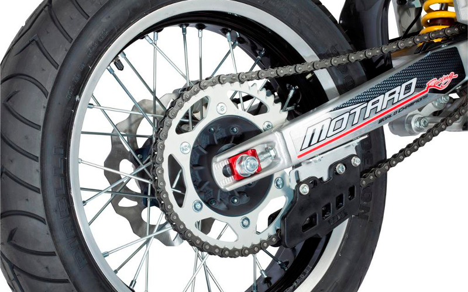
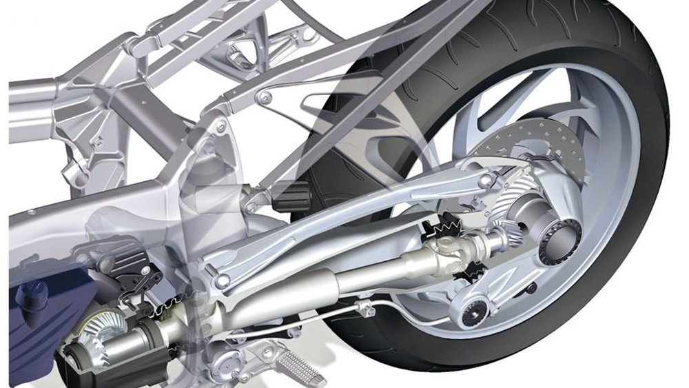
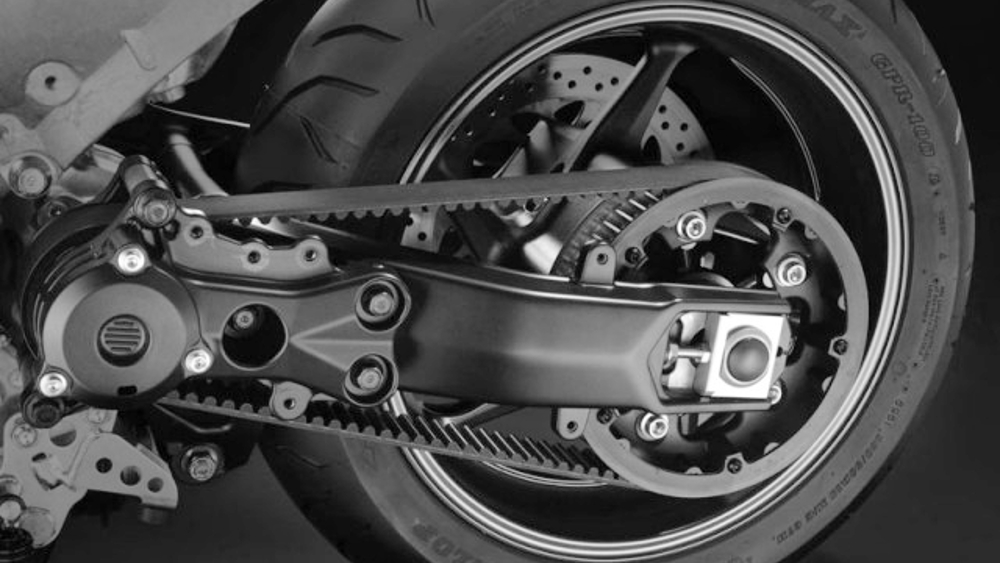

Transmision
Son tres tipos de sistema de transmisión para motos, a pesar que el más popular es la cadena, existen otros que la superan en algunos aspectos  La transmisión permite que la potencia generada en nuestro motor pase hacia la rueda trasera, esto hace que nos movamos a bordo de nuestro amigo de dos ruedas, es por eso que para comprender mejor el mundo motero, Todomotos te explica un poco más sobre los tres tipos de sistema de transmisión de nuestras motos. El más popular y usado es sin duda la transmisión por cadena, que junto con el piñón y la corona, es el que mejor aprovecha la potencia del motor, logrando redirigir toda la fuerza de este hacia la rueda. Esa es la razón principal de que en las competencias se use exclusivamente este sistema. Las desventajas de las cadenas es que deben seguir un mantenimiento periódico para garantizar su óptimo rendimiento que consiste en una limpieza y engrasado. Además, de la verificación de la tensión y cada cierta cantidad de kilómetros -dependiendo del fabricante- ésta tiene que ser cambiada. El segundo método es la transmisión secundaria por cardan, si bien no es la más usada es la preferencia de los fabricantes que crean motos para viajar, como los trail o turismo. La marca alemana BMW es la que más ha desarrollado esta tecnología, que consiste en un sistema de engranajes cónicos y un eje de transmisión, que permiten trasladar la potencia del motor a la rueda.  El beneficio de este sistema es que es más duradero que la cadena, no necesita de mantenimiento y produce menos ruido. Sin embargo, es bastante pesada y al pasar por muchos elementos la potencia disminuye un poco antes de llegar a la rueda trasera, aminorando los caballos de fuerza del vehículo. El tercer medio usado para la transmisión de potencia es el de la correa dentada con engranaje. Este sistema usa el mismo principio que la cadena y su ventaja frente a ésta es que no necesita mantenimiento y hace menos ruido. Pero tiene menor resistencia si se usa en terrenos polvorientos. Además, es frágil si se acopla a motores potentes, por lo que su uso se limita a vehículos de baja cilindrada. Ya sabes amigo motero, el conocimiento de las ventajas de estos tipos de sistema de transmisión de las motos te permitirá saber mejor cómo funciona la mecánica de nuestros vehículos. Asimismo, esta información es muy útil si deseas adquirir un nuevo modelo. 
| INICIO |